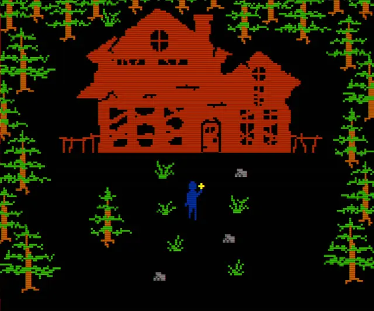
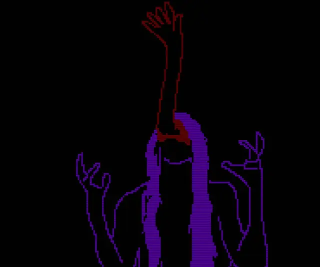
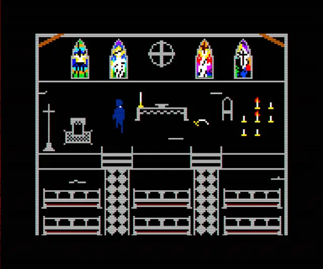
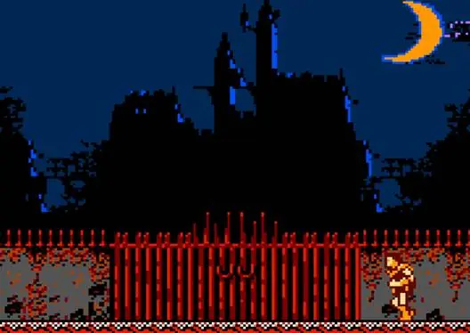
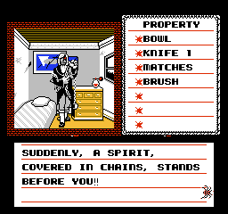
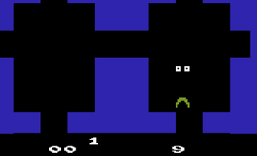
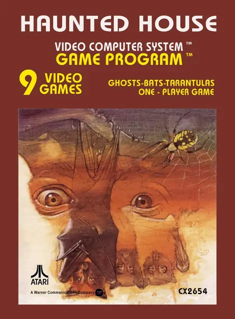
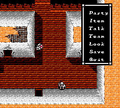
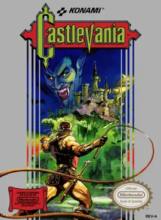

The feel
In 8-bit occult horror, basic graphics have to carry the fear: Airdorf began FAITH by asking whether a game that looks like Number Munchers (1988) could feel like P.T. (2014).1 He knew that graphics which looked as if they came from the 1970s or 80s could still scare people.2 Each horror is only a few pixels, which feeds the fear of the unknown,3 and the scariest things are often the ones your own mind conjures.4
The occult side comes from the 1980s: FAITH draws on the Satanic panic, the moral panic of that decade,5 and casts you as a priest investigating a Satanic possession.6 Every so often the basic graphics cut to rotoscoped scenes that shouldn't be possible on that old hardware, which gives the game a 'cursed media' feel.3
- pitch-black
- ritual
- flat colour
- 1px line art
- patient
- 1980s basement
Where it comes from
Atari's Haunted House (1982), designed by James Andreasen, cast you as a pair of eyes searching a dark mansion with a book of matches.4 On the Famicom, Castlevania's director wanted players to feel they were inside a classic horror film,7 Digital Devil Story: Megami Tensei was one of the first RPGs to let you negotiate with demons and turn them into allies,8 and Capcom's Sweet Home (1989) supplied the systems Resident Evil was first built on.9,10 Airdorf put out the first chapter of FAITH free in 2017, aiming for an Atari, ZX Spectrum and Apple II look,6,3 and all three chapters came out together as FAITH: The Unholy Trinity in October 2022.6,2
Core elements
Minimal sprite detail
Airdorf often redrew a sprite to make it less detailed and more ambiguous.3 He calls it a struggle not to add detail, because chunkier shapes leave more room for the fear of the unknown.5
Primary colours on black
Everything sits on a black background, with characters and details in simple primary-colour sprites.6 Airdorf chose not to shy away from vivid colours, and the bright retro palette plays ironically against the disturbing story.3
Colour-coded monsters
Monsters keep to two colours at most: dark red usually means a fleshy creature, dark grey a phantom.3 Because anything coloured differently could be death, players grow wary of anything out of the ordinary.5
Exorcism as the core action
FAITH began as a copy of Oregon Trail's hunting game, with a demon that pops out of the side of the screen and a cross instead of a gun.2 In the finished game the priest uses his crucifix to perform exorcisms, fight enemies and cleanse unholy objects.11
Rotoscoped cutscenes
Cutscenes break the plain look with rotoscoped animation of the kind used in Prince of Persia and Another World.6 Airdorf turned to rotoscoping when a still image of Amy peering out from under a bed wasn't scary enough, and finds the result has an uncanny valley effect.3
Text-to-speech voices
Characters and demons speak through old text-to-speech programs, which Airdorf finds just human enough to be eerie.3 The demon noises have no subtitles, so players are left wondering whether they heard a message in the static.3
How to do it
Choose the target hardware
Atari 2600: a picture 160 colour clocks wide and 192 lines tall, a low-resolution playfield whose right half repeats or mirrors the left, player sprites 8 pixels wide, and four colour registers shared by the background, playfield and moving objects.12 NES: 256 by 240 pixels built from 8 by 8 tiles, with four colours per palette, one of them transparent.13 FAITH draws at 192 by 160.1,14 Scale up by whole numbers only, so every pixel stays the same size.15
Sketch monsters as pixel blobs
Make rough blobs of pixels and keep the most disturbing ones: Airdorf made about 50 when he started Chapter II.3 Give each monster two colours at most and a few simple animation frames.3 If a sprite starts to look finished, redraw it less detailed and chunkier.5
Assign a meaning to each colour
Use the original Apple II, ZX Spectrum or Commodore 64 palettes as a guide and don't shy away from bright colours.3 Then fix a meaning for each colour and keep to it, as FAITH does with deep red, purple and dark grey.3
Rotoscope the cutscenes
Film yourself acting the scene, import the frames, downscale them and trace over them at 15 frames per second.2 Keep the traced frames at the game's own resolution and upscale them at runtime: FAITH's first builds stored them at 1080p and crashed players' video cards.14 A display tablet makes the tracing much faster than a mouse.14
Use darkness as a mechanic
Haunted House shows items, doors and stairs only by the light of a match, which goes out when an enemy is near.4 FAITH has a pitch-black room you can only cross by firing a camera flash, which also gives you glimpses of the demons hunting you.5 Keep such flashes under three a second.16
Voice lines with a speech synthesiser
Run the lines through an emulated old speech synthesiser: you can shape the throat and mouth, the pitch and the speed, then export to the file format you need.3 Airdorf adds a lot of post-processing and tweaking,2 and leaves the demon noises without subtitles.3
Build a wraparound forest maze
Lay out the woods as a grid with Pac-Man style wraparound warps and some randomised tiles, so players feel lost with a demon on their heels.5
Cheat sheet
Do
- Keep the interactions as simple as the graphics, to protect the mystery.5
- Find the places players think are safe and invade them. FAITH hides a demon disguised as a tree, then fills the next area with ordinary trees.5
- Show what is coming but not when: monsters at windows, notes warning players away.5
- Let footsteps carry the rooms. Apart from stings on the stairs and a tune at the end, Haunted House has no music, only your footsteps and the occasional rushing wind.4
- Be generous with spawn points, so dying again and again doesn't make the unknown known.5
Avoid
- Over-producing sprites. It took Airdorf real effort not to, for monsters, environments and props alike.3
- Explaining too much. FAITH lost a long flashback to 1980 because it hurt the pacing and removed uncertainty about the past.5
- Uneven scaling. Fractional stretches make pixel art look wrong.15
- Full-screen flashes for jump scares, above all in saturated red, which counts as a flash at a smaller change in brightness.16
- Muting the palette to look serious. FAITH gets its irony from bright retro colours set against a disturbing story.3
Tools and tutorials
- 8bitworkshop
Write and run Atari 2600 and NES programs in the browser.
- batari Basic
A BASIC that compiles to real Atari 2600 games, playfields included.
- PICO-8
16 colours at 128 by 128. Quick for prototyping this look.
- Aseprite
Pixel-perfect line mode for clean 1px outlines, and onion skin for rotoscoping.
- Dn-FamiTracker
Tracker for writing NES sound chip music.
- Lospec: NES palette
The NES colours as hex values, ready for any editor.
Palette
Sampled from FAITH, Haunted House and Uninvited. Everything sits on black, with characters and details in simple primary colours.6
Feel the vibe
Listen
A hymn tune in chip sound. Airdorf looks out for public-domain music he can appropriate14 and twists familiar, comforting pieces into something terrifying.11
YouTubeA fast, bright march from a game meant to feel like a classic horror film.7 The style doesn't have to be quiet.
YouTubeOminous but catchy. Resident Evil began as a remake of this game.9
YouTubeMusic for one of the first RPGs that let you talk demons into joining you.8
YouTubeA music-box melody over whispers and a heavy beat: ritual music from outside games, played live by the band.
YouTube
More references









Games
- Haunted House
Study how a 2600 game builds dread from darkness, a book of matches and footsteps.4
- Castlevania
Meant to feel like a classic horror film, with the Mummy, Medusa and Dracula.7
- Digital Devil Story: Megami Tensei
One of the first RPGs that let you negotiate with demons and turn them into allies.8
- Sweet Home
A haunted mansion, frescoes that give up hidden messages to a camera, and deaths that stay permanent.9
- Uninvited
Study how the NES port tells a haunted house through text boxes and an inventory.
- FAITH: The Unholy Trinity
Study how it sets primary-colour sprites against rotoscoped cutscenes.6 Airdorf traced the cutscenes in Photoshop over film of himself acting them out.2
Film, art and more
- The Exorcist
Airdorf names it, and The Exorcist III, among the films behind FAITH.2
- The Omen
Listen to how Jerry Goldsmith's choral score makes the occult sound like a liturgy.
- Suspiria
Study its saturated coloured light, a visual parallel to one-colour rooms.
- Satanic panic
The 1980s moral panic that FAITH draws on.5
- Sigil
Read how sigils are built from letters and grids, then try the sigil maker at the top of this page.
Sources
- 1The Art of 'FAITH': Horror at 192x160 Pixels
- 2FAITH: I Read FAITH Fanfiction And Some Of Y'all Need Jesus
- 3Using minimalism to channel the fear of the unknown in FAITH: The Unholy Trinity
- 4Origins of Greatness: Proto Survival Horror 'Haunted House' at 40
- 5Eight tools for creating chilling horror from the maker of FAITH
- 6The Exorcist by way of the Commodore 64 just dropped on Steam
- 7Tracking down the obscure mind behind Castlevania
- 8Megami Tensei developer's frustration with goblin encounters in Dungeons & Dragons is what inspired the series' demon negotiation system
- 9The NES Game That Inspired Resident Evil
- 10Two decades later, Mikami recounts the origin story of Resident Evil
- 11When Faith Fails: FAITH: The Unholy Trinity
- 12Stella Programmer's Guide
- 13NES / Famicom Architecture: A Practical Analysis
- 14Digging into the low-poly horror vibes of Airdorf's Hatching and FAITH: Chapter III
- 15Multiple resolutions
- 16Xbox Accessibility Guideline 118: Photosensitivity